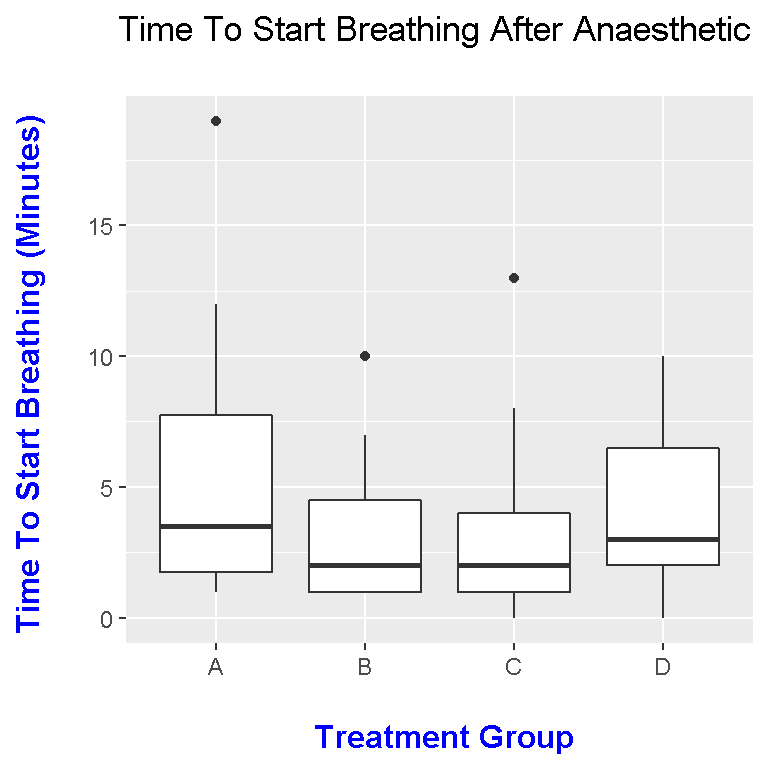

Boxplots In R
Hi. Here is some work I have done in R with regards to boxplots.
Table Of Contents
A Short Guide To Boxplots
Creating Boxplots In R Using The ggplot2 Package
References
A Short Guide To Boxplots
Boxplots are simple visuals which shows the distribution of a dataset (or a set of values). In a boxplot, you can visually determine the minimum value, the 25th percentile (where 25 percent of values are below), the median (middle number of 50th percentile), the 75th percentile, the maximum value and any extreme points outside of the minimum/maximum values which are known as outliers.
The range is equal to the maximum value minus the minimum value.
The difference between the third quartile and the first quartile is the interquartile range (IQR).
Here is a visual guide.

Creating Boxplots In R Using The ggplot2 Package
In R, I use a dataset called anaesthetic from the faraway dataset library/package. The image below provides the details of this dataset.
Load the faraway and ggplot2 packages into R.
# Box Plots In R
# Ref: R Graphics Cookbook
# http://www.purplemath.com/modules/boxwhisk2.htm
# http://flowingdata.com/2008/02/15/how-to-read-and-use-a-box-and-whisker-plot/
library(faraway)
library(ggplot2)
I save this anaesthetic data into a variable called hosp_data. Then, I preview the data using the head() and tail() functions.
hosp_data <- anaesthetic
# Preview the data:
head(hosp_data)## breath tgrp
## 1 3 A
## 2 6 B
## 3 3 C
## 4 4 D
## 5 2 A
## 6 4 Btail(hosp_data)## breath tgrp
## 75 4 C
## 76 9 D
## 77 12 A
## 78 7 B
## 79 0 C
## 80 1 D
The data structure and the summary of this dataset can be examined using str() and summary() respectively.
# Check structure and summary:
str(hosp_data)## 'data.frame': 80 obs. of 2 variables:
## $ breath: num 3 6 3 4 2 4 5 8 1 1 ...
## $ tgrp : Factor w/ 4 levels "A","B","C","D": 1 2 3 4 1 2 3 4 1 2 ...summary(hosp_data)## breath tgrp
## Min. : 0.000 A:20
## 1st Qu.: 1.000 B:20
## Median : 3.000 C:20
## Mean : 4.013 D:20
## 3rd Qu.: 5.250
## Max. :19.000
In the summary of hosp_data, we are given the 5 number summary and mean of the variable/column breath. This five number summary is the numerical version of the boxplot. We also see that each of the four treatment groups have 20 observations each.
The column names are renamed using colnames().
# Column Names:
colnames(hosp_data) <- c("Time", "Treatment_Group")
A Boxplot In R
Creating a boxplot in R is not very difficult. The main parts for creating a boxplot using ggplot2 is the ggplot() function and geom_boxplot(). The hard part would be adding labels and changing some visual features. Here is the code and boxplot below.
# Boxplots:
ggplot(hosp_data, aes(x = Treatment_Group, y = Time)) + geom_boxplot() +
labs(x = "\n Treatment Group", y = "Time To Start Breathing (Minutes) \n",
title = "Time To Start Breathing After Anaesthetic \n") +
theme(plot.title = element_text(hjust = 0.5),
axis.title.x = element_text(face="bold", colour="blue", size = 12),
axis.title.y = element_text(face="bold", colour="blue", size = 12),
legend.title = element_text(face="bold", size = 10))
Adding Means To Boxplots
The boxplot above gives information on minimums, maximums, 25th percentiles, 75th percentiles, medians, ranges and outliers. However, the boxplot above does not have means. Means can be added to boxplots by adding stat_summary(). (The means are represented by red squares.)
# Boxplots:
ggplot(hosp_data, aes(x = Treatment_Group, y = Time)) + geom_boxplot() +
labs(x = "\n Treatment Group", y = "Time To Start Breathing (Minutes) \n",
title = "Time To Start Breathing After Anaesthetic \n") +
theme(plot.title = element_text(hjust = 0.5),
axis.title.x = element_text(face="bold", colour="blue", size = 12),
axis.title.y = element_text(face="bold", colour="blue", size = 12),
legend.title = element_text(face="bold", size = 10))
References
- R Graphics Cookbook by Winston Chang (2012)
- http://www.purplemath.com/modules/boxwhisk2.htm
- http://flowingdata.com/2008/02/15/how-to-read-and-use-a-box-and-whisker-plot/